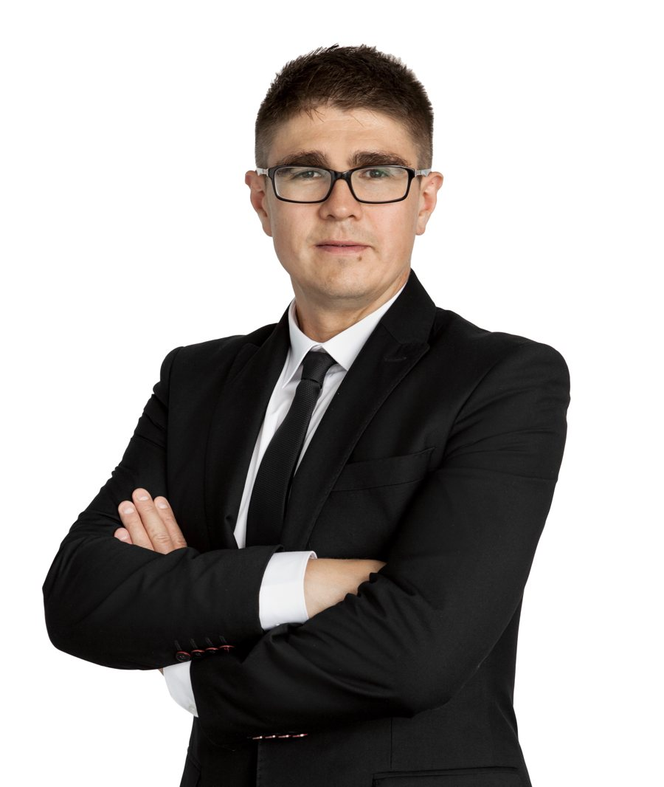

Zarządy i komitety
Jak czytać wyniki modeli jako przedziały, jakie pytania zadać autorowi modelu i kiedy zatwierdzić, a kiedy wstrzymać decyzję.
Warsztaty z modeli ryzyka, walidacji, kapitału i decyzji w warunkach niepewności – z pełnym programem dzień po dniu, case’ami z praktyki i ćwiczeniami w zespołach.
Szkolenia są projektowane pod konkretną rolę w banku – inaczej rozmawiamy z Zarządem, inaczej z zespołem walidacji.
Jak czytać wyniki modeli jako przedziały, jakie pytania zadać autorowi modelu i kiedy zatwierdzić, a kiedy wstrzymać decyzję.
Testy ilościowe, backtesting, ocena jakościowa i raport walidacyjny – warsztat, na którym liczymy i dyskutujemy wyniki.
Gdzie modele ryzyka trafiają do bilansu, wyniku i kapitału – i jakie sygnały ostrzegawcze warto rozpoznawać w dokumentacji.
Każdy dzień kończy się czymś, co uczestnik zabiera do swojej pracy: listą pytań, schematem oceny albo gotowym argumentem na komitet.
Każdy model pokazuję tam, gdzie działa: w procesie, w bilansie, w wyniku i w kapitale.
Pracujemy na skróconych raportach walidacyjnych, danych i wynikach testów, a nie na podręcznikowych przykładach.
Zespoły, role i symulacje posiedzeń komitetu – każdy ma inny pakiet informacji, decyzję trzeba obronić.
Uczę patrzeć na niepewność modelu: skąd się bierze, jak ją mierzyć i jak o niej mówić.
„Model nie daje jednej liczby. Daje przedział – a dobra decyzja zaczyna się od zrozumienia, jak szeroki on jest.”Maciej Buczak
Szkolenia z gotowych programów albo przygotowane pod potrzeby zespołu – z tych samych obszarów, w których prowadzę projekty.
PD, LGD, EAD, SICR, scenariusze i złożenie ECL – budowa i ocena modeli.
Backtesting, stabilność, wrażliwość, ocena jakościowa i raport walidacyjny.
RWA po CRR III, kapitał wewnętrzny, modele kapitału ekonomicznego.
VaR i Expected Shortfall, backtest, FRTB i porównywanie modeli.
Modele aktuarialne, rozkłady dotkliwości i grube ogony, podejście AMA.
Myślenie probabilistyczne, zdarzenia rzadkie i pułapki interpretacji prognoz.
Jedno- i dwudniowe warsztaty z pełnym programem dzień po dniu. Terminy i forma – stacjonarnie albo zdalnie – do uzgodnienia.

Buduję, oceniam i bronię modele ryzyka. Moje projekty zawsze dotyczyły realnego problemu biznesowego – z jego wymiarem finansowym i kosztem wdrożenia zmian. Często wymagały wyjścia poza przyjęty sposób myślenia.
Na szkoleniach przenoszę to doświadczenie na salę: pracujemy na przypadkach z banków, raportach walidacyjnych i decyzjach komitetów. Interesuje mnie przede wszystkim to, czy model naprawdę opisuje rzeczywistość – i co zrobić, gdy nie opisuje.
Napisz, kto weźmie udział i jaki problem chcecie rozwiązać – zaproponuję program, formę i termin.